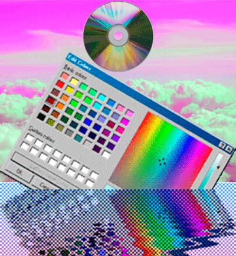
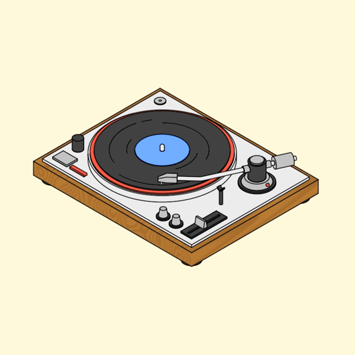
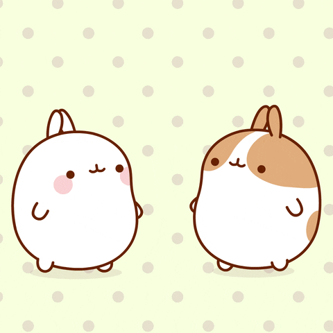

Definición
El término “aesthetic” ha crecido mucho en los últimos años gracias a cómo se usa en las redes sociales para referirse al tema visual de una cuenta en concreto y a cómo se presenta a los demás. Más a menudo asociado con Instagram , una aesthetic (qué podríamos traducir como “estética”) puede existir en cualquier plataforma digital con un componente visual. El término se puede usar en relación con la marca, ya que una cuenta puede funcionar para seleccionar una estética coherente para formar y perfeccionar una marca: ya sea personal o profesional. Un aesthetic cuidadosamente seleccionado es una forma en la que alguien puede mostrar su personalidad, creencias, ojo artístico y mucho más. Si bien las tendencias estéticas convencionales de las redes sociales se inclinan hacia un diseño limpio con imágenes que se considerarían convencionalmente pulidas y atractivas, muchas personas jóvenes lo están alejando al crear un aesthetic de una estética cuidadosamente seleccionada hacia imágenes y diseños más desordenados.
Cottagecore
Cottagecore es un término inglés compuesto por la palabra cottage ( cabaña) y core que significa centro. Y se refiere no sólo a una estética y estilo de vestir sino a una forma de vida estrechamente vinculada al campo y a la vida rural. Un estilo de vida slow, sencillo y sostenible en armonía con la naturaleza.La estética cottagecore abarca tanto la moda como un tipo de decoración, cocina o hábitos como la jardinería; desde llevar un pañuelo en la cabeza mientras cocinas de forma tranquila un bizcocho a llevar un vestido romántico mientras das un paseo por el campo. Es un estilo que busca el disfrute de las cosas simples junto al retorno de tiempos pasados donde se vivía de forma más pausada. El estilo de vestir cottagecore se basa en prendas apropiadas para la vida rural y se caracteriza por ser romántico, sencillo, cómodo, natural y hogareño. Suelen usarse colores suaves como los pasteles en rosa, lila o celeste y los colores neutros como beige o blanco. Las siluetas son aniñadas con volantes, faldas de vuelo, cuellos babe, lazos, mangas con volumen y vestidos midi. Y los estampados estrella son el Vichy y las flores, especialmente las margaritas.
La estética cottagecore se encuentra dentro de la filosofía del slow fashion, sobre todo porque se aleja del consumismo frenético y apuesta por un consumo más sostenible y cíclico sobre todo recurriendo a prendas de segunda mano y dejando a un lado las tendencias del momento.

Lovecore
Visualmente, Lovecore tiende a centrarse en la comercialización del amor a través de las tendencias decorativas del Día de San Valentín. Los rituales asociados con el romance también están muy presentes, especialmente en el texto. La estética tiene subestilos que pueden enfatizar imágenes vintage , anime o Cottagecore . Comparte las imágenes y el espíritu del Día de San Valentín , se basa en la cultura visual del romance fabricado. Las formas de amor en las que se centra específicamente la estética son afectuosas, llenas de dopamina y "efusivas". Puede involucrar relaciones tanto correspondidas como no correspondidas, tanto el enamoramiento por alguien desde lejos como los rituales de las citas que se muestran en estas imágenes. Las relaciones pueden ser tanto nuevas y juveniles como viejas y familiares. Los aspectos más maduros, filosóficos o seductores y eróticos del amor no se presentan, ya que visualmente, a menudo no coinciden con las imágenes y la audiencia más joven de Lovecore. La moda Lovecore es una mezcla de lencería, alas de ángel, vestidos de satén y ropa formal para citas en general, aunque a veces las personas que se identifican con la estética adoptan un look suave u optan por camisetas gráficas con los temas antes mencionados. Los conjuntos estilo Larme también son populares. También son bastante comunes colores como el rosa, el rojo y el blanco, así como motivos como corazones y marcas de lápiz labial.
Vaporwave
El vaporwave es un género de música electrónica, un estilo artístico y un meme de internet que surgió a mediados de la década de 2010. Musicalmente, se caracteriza por la remasterización de muchos otros géneros musicales como el indie, seapunk, witch house, ambient y chillwave con estilos de otras décadas, principalmente de finales de los años 70 y los años 80 (como el funk, el New Age o el city pop). Artísticamente, incorpora elementos tan dispares como el software y diseño web de finales de los años 90, las imágenes pixeladas, la escultura griega clásica, la pintura renacentista, el anime, el uso de la música y lengua japonesa en general, la publicidad de épocas pasadas, el renderizado 3D y colores vivos, con temáticas de ciencia ficción y ciberpunk. El género emergido en el 2011 de comunidades en línea, como Turntable.fm.En años subsiguientes, obtuvo crecimiento en popularidad a través de sitios web como Bandcamp, Soundcloud, Last.fm y chan. En el 2010, el músico experimental Daniel Lopatin (mejor conocido como Oneohtrix Point Never) publicó el casete de edición limitada Eccojams Vol.1 bajo el seudónimo de Chuck Person, mientras que James Ferraro, un productor neoyorquino de música electrónica publicó Far Side Virtual, estos álbumes son considerados como "catalizadores" para el desarrollo del género
Vintage
Este otro tipo de aesthetic se mueve más en el pasado. Eligiendo tanto tonos cálidos como fríos, para reflejar imágenes de épocas o décadas pasadas especialmente los 50, los 60 y los 70. Es el término empleado para referirse a objetos o accesorios con cierta edad, que no pueden aún catalogarse como antigüedades, y que se considera que han mejorado o se han revalorizado con el paso del tiempo. El término surge por analogía con los vinos de crianza, los cuales son conocidos por mejorar con el tiempo. Se utiliza para designar instrumentos musicales, automóviles, libros, fotografías, y, más recientemente, prendas o accesorios de vestir, además de videoconsolas y videojuegos.
Kawaii
Kawaii es un adjetivo japonés que puede ser traducido al español como 'bonito' o 'tierno'. Este término ha tenido cabida dentro de la cultura popular japonesa, en el entretenimiento, en la moda, en la comida, juguetes, apariencia, conducta y hábitos personales.
Dark Academia
Dark Academia es una estética que gira en torno a la literatura clásica, la búsqueda del autodescubrimiento y una pasión general por el conocimiento y el aprendizaje. Es una de varias variaciones, cada una con su propio enfoque histórico único. Dark Academia proviene visualmente de las culturas europeas, al igual que con sus variaciones más conocidas.